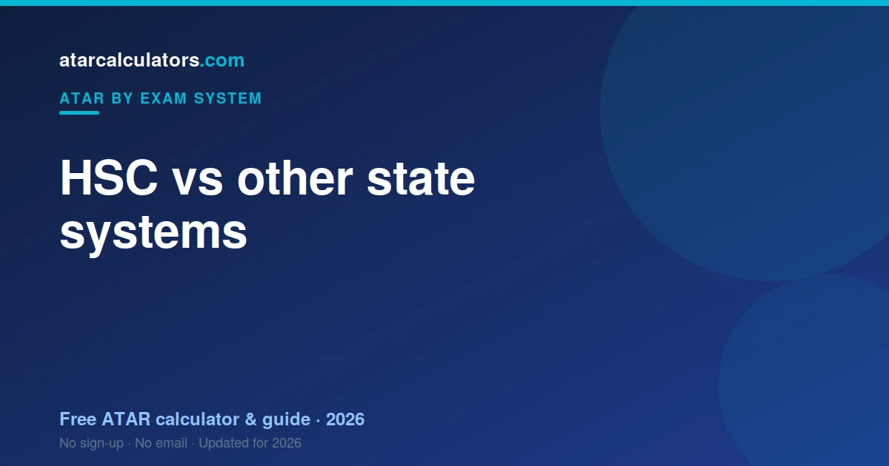

The HSC is not inherently easier or harder than other state systems. The ATAR is a national rank, so a given ATAR means the same thing everywhere. Differences in state medians mostly reflect participation rates, not difficulty. Each system assesses students differently, but all produce the same national ATAR.
Key takeaways
- The HSC is not inherently easier or harder than other systems.
- The ATAR is a national rank — a given ATAR means the same everywhere.
- State median differences mostly reflect participation, not difficulty.
- Each system assesses differently, but all produce the same ATAR.
- Scaling equalises subjects within each state.
- You cannot get an easier ATAR by moving states.

The ATAR is national
Whatever state you study in, you receive an ATAR on the same 0.00 to 99.95 scale. A 90.00 in NSW means the same as a 90.00 in Victoria or Queensland when you apply for university anywhere.
This is the key point. The ATAR is a national rank, designed so students from different states can be compared for the same course. So the “which is easier” question misunderstands what the ATAR is.
How the systems differ
New South Wales counts your best 10 units, including 2 units of English, to an aggregate out of 500. Victoria works to about 210, Queensland to 500 on a different basis, South Australia to 90, Tasmania to 75.
The HSC is the only system built on units rather than whole subjects, which is why a 2-unit course contributes its scaled mark twice and an Extension course contributes once.
Why state medians differ
State medians differ because participation differs, not because standards do. Where more students receive an ATAR, the median sits lower.
Is any state easier?
No. Your ATAR ranks you inside your own state cohort, so an easier state would need weaker students rather than gentler subjects.
The HSC's unit structure is distinctive but not lenient — it simply gives you more ways to assemble the same 10 units.
How scaling fits in
Every state scales to make subjects comparable before ranking. UAC does it for New South Wales, working entirely within the NSW cohort.
Does moving states help your ATAR?
No. A move swaps cohort and rulebook without improving your standing. The HSC's unit system has no direct equivalent elsewhere, so a mid-stream move is especially disruptive.
What to focus on instead
Rather than wondering which state is easier, focus on what you control: doing well in your own subjects, ranking strongly within them, and choosing subjects that suit you.
That is what lifts your ATAR, whatever state you are in. The system is fair by design, so your effort and choices matter far more than geography.
Estimate your ATAR
Wherever you study, you can estimate your ATAR. Our HSC ATAR calculator uses the latest official scaling to estimate your ATAR from your marks.
Compare your estimate with the cutoff for your course, and you have a clear target. See what a good ATAR is nationally for context.
A closer look at each system
Each state assembles the rank differently. NSW counts 10 units to 500, with English compulsory. Victoria counts four studies plus increments to 210. Queensland counts five subjects to 500. South Australia counts three and a half to 90. Tasmania adds five to 75.
Five methods, one national percentile.
The myth of the easy state
The easy-state myth cannot survive contact with the mechanism. Your ATAR ranks you against your own state's age group, and scaling has already levelled subjects within that state.
For another state to be easier, its cohort would have to be weaker than yours.
What actually varies between states
What varies is the experience. The HSC runs on units, weights moderated school assessment against an aligned exam, and reports results in bands — none of which the other states do in the same way.
Focus on your own rank
Since no state hands out easier ATARs, the only useful focus is your own rank inside your 10 units. That is the part you control.
Interstate students and the ATAR
Because the ATAR is national, students who move interstate, or apply to universities in another state, are compared on the same scale. A student with an HSC-based ATAR and one with a VCE-based ATAR are treated identically for the same course.
So you do not need to worry that your state’s system will disadvantage you elsewhere. Universities across the country accept the ATAR as a common measure, wherever it was earned.
The bottom line
The HSC reaches the national rank through 10 units and an aggregate out of 500, with English compulsory and marks reported in bands. Different route, same destination.
What to take away
Cross-state comparison is a good argument and a bad plan. Your units, your rank, your aggregate — that is the whole of what you can influence.
How the ATAR compares students fairly
If you want to compare states fairly, compare the rank and nothing else. An 85.00 is an 85.00 in every state. The aggregates behind it — 500, 210, 90, 75, 430 — were never meant to be lined up.
Common questions
Is the HSC harder than the VCE?
Neither is inherently harder. The ATAR is a national rank, so a given ATAR means the same in both states. The HSC and VCE assess students differently, but both produce the same national ATAR.
Are ATARs comparable across states?
Yes. The ATAR is a national rank on the same 0.00 to 99.95 scale, so a 90 means the same thing wherever you study. That is the whole point of a national rank.
Does one state give higher ATARs?
No state hands out easier ATARs. Within each state, scaling equalises subjects and the ATAR ranks students against their age group, so a given ATAR represents the same percentile everywhere.
Why do state medians differ?
Mostly because of participation rates. In some states a larger share of students receive an ATAR, while in others more take vocational paths, which shifts the median of those who do get one.